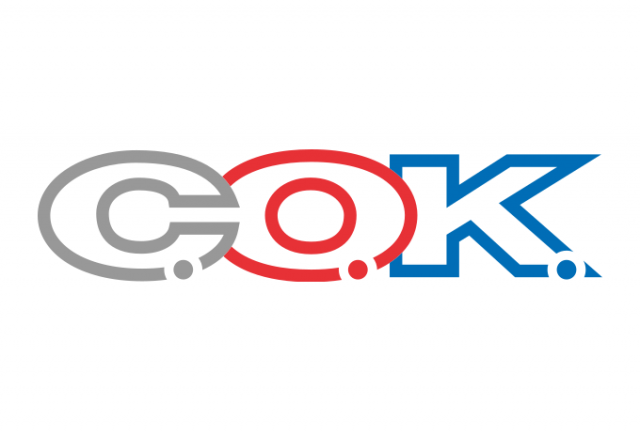

Материал компании

MITEX 2026 · Россия · Стенд 8А803а
С.О.К.
Карточка проверена 10 ноября 2026, 09:25 · Источник ↗ · Снимок оригинальной карточки ↗
IT, маркетинг и медиа — в подборку услуг →
О компании
«С.О.К.» (Сантехника. Отопление. Кондиционирование) — независимое издание, ежемесячный научно-технический журнал для профессионалов в области инженерных систем зданий. Выходит с 2002 года. Тематика: водоснабжение и водоотведение, отопление и ГВС, вентиляция и кондиционирование, энергосбережение и ВИЭ, BIM-проектирование. Журнал входит в перечень ВАК РФ. Портал c-o-k.ru — более 250 000 посещений в месяц, еженедельная рассылка новостей — более 120 000 подписчиков. Аудитория — проектировщики, монтажники, специалисты сервисных и эксплуатирующих организаций, руководители и специалисты по закупкам.
Контакты
Сайт: https://www.c-o-k.ruE-mail: media@mediatechnology.ruТелефон: +74956650000Телефон: +7(495)665-00-00
Все контактные сведения из карточки
Контакты Редакция Телефон: +74956650000 E-mail: media@mediatechnology.ru Адрес: 143007, Россия, Московская область, Одинцово, ул. Молодёжная, д. 48, помещ. 1Б, офис 10 Веб-сайт: https://www.c-o-k.ru E-mail: media@mediatechnology.ru Телефон: +7(495)665-00-00
Все рубрики участника
Зал
- Зал № 6
Участник выставки
- MITEX